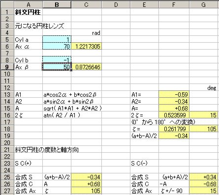
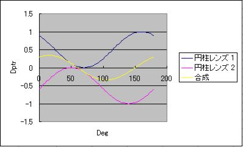
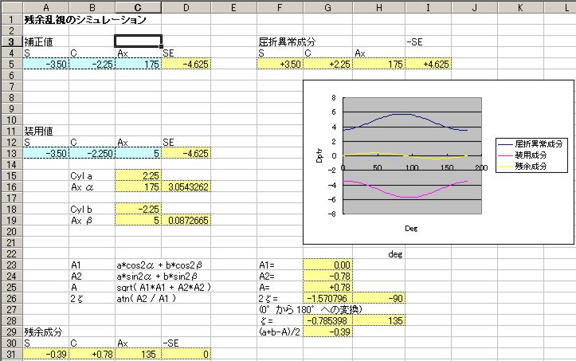

Clinical Optics
斜交円柱計算 Excel用シート
ダウンロード手順
== Internet Explorer を利用の場合 ==
以下の syakou2p.xls を右クリックして下さい。
プルダウンメニューが現れるので，"対象をファイルに保存" を選択します。
ファイルは何処に保存してもかまいませんが，マイドキュメント (My Documents) あたりが無難です。
ファイル名は "syakou2p.xls" という名前で保存されます。
Internet Explorer 以外のブラウザを利用されている場合は，適宜ブラウザのダウンロード方法に従って下さい。
使用手順
Excel を起動し，ツールバーの [ファイル(F)] - [開く(O)] で マイドキュメントを表示させれば，
"syakou2p.xls" を見つけることが出来ます。
"syakou2p.xls" を選択して，ボタン [開く(O)] を押せば，
斜交円柱計算シートが使用出来るようになります。
※ "syakou2p.xls" は斜交円柱の計算に必要な マクロ を含んでいるので，Excelを起動したとき，
画面上部に以下のような警告が表示される場合があります。
この警告が表示されたときは，「コンテンツの有効化」をクリックして下さい。
警告が消え，正常に斜交円柱の計算ができるようになります。
"syakou2p.xls" は，3枚のシートで構成されています。
各シートとも "シート保護" が ON になっています。
これは，誤入力を防ぐために，入力出来るセル以外は数値を入れられないようにしているためです。
Sheet1
２枚の円柱レンズを，軸方向を任意の角度で重ね合わせたとき発生する
合成乱視（残余乱視）を計算します。
fig.1a が入力部分と計算部分を示しています。

fig. 1a
水色のセルが数値を入力出来るセルです。
セル[B-5]には，1枚目の円柱レンズの度数を入力します。
セル[B-6]には，1枚目の円柱レンズの軸方向を入力します。
セル[B-8]には，2枚目の円柱レンズの度数を入力します。
セル[B-9]には，2枚目の円柱レンズの軸方向を入力します。
入力し終えたら [Enter]キーを押します。
計算結果が黄色のセルに表示されます。
また fig.1b のように，1枚目の円柱レンズ，2枚目の円柱レンズ，そして合成円柱レンズそれぞれの
経線毎の屈折力を示すグラフも描画されます。

fig. 1b
Sheet2
屈折補正値と装用値が異なった場合の残余乱視を含む誤差を計算するシートです。
fig.2 がシート全体の構成を示しています。

fig. 2
水色のセルが数値を入力出来るセルです。
セル[A-5]には，補正値の球面度数を入力します。
セル[B-5]には，補正値の円柱レンズの度数を入力します。
セル[C-5]には，補正値の円柱レンズの軸方向を入力します。
ここで [Enter]キーを押すと，右側に被検眼の屈折異常値が表示されます。
セル[A-13]には，装用値の球面度数を入力します。
セル[B-13]には，装用値の円柱レンズの度数を入力します。
セル[C-13]には，装用値の円柱レンズの軸方向を入力します。
入力し終えたら [Enter]キーを押します。
計算結果が黄色のセルに表示されます。
また，被検眼の屈折異常値，装用値，残余成分の経線毎の屈折力を示すグラフも描画されます。
シート1，シート2 とも計算途中の重要な変数の値は黄色のセルに表示してあるので，
それぞれがどのような値をとっているか確認することが出来ます。
Sheet3
このシートは，シート1，シート2 のグラフ描画用のデータを処理しています。
シート1，シート2 の入力値を変えるとこのページの数値が変わりますが，
自動的に処理しているので，内容を変更しないようにして下さい。
よく見ると分かると思いますが，合成乱視や，残余乱視の計算は
計算機らしい計算をさせています (^^;。